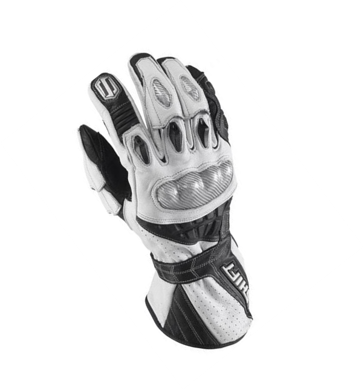
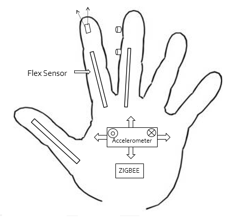
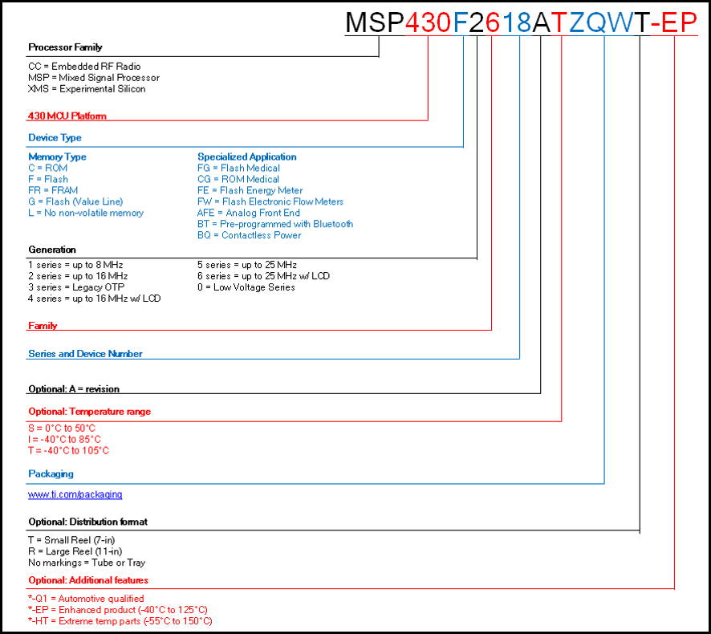
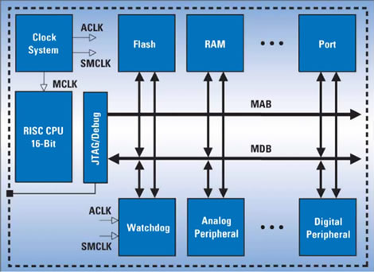
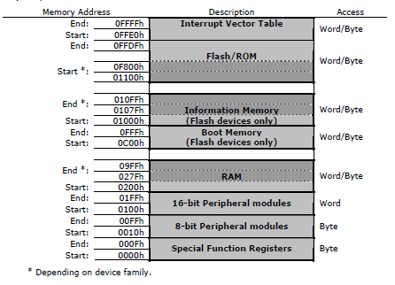
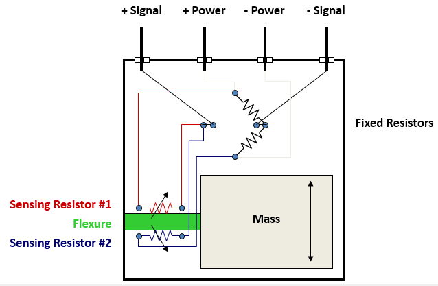
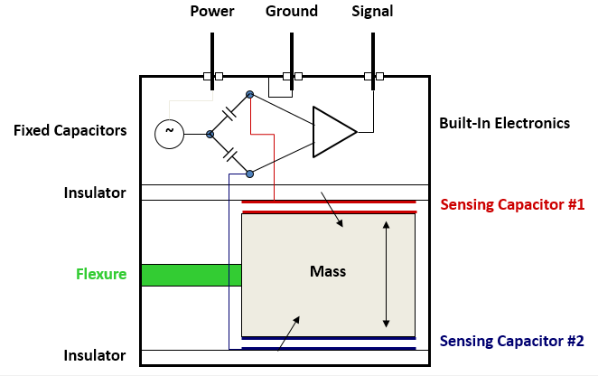
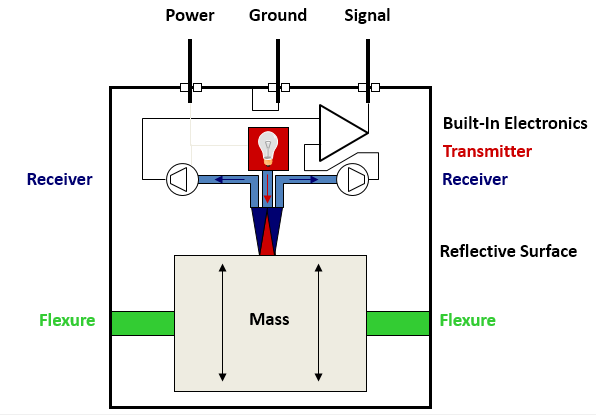
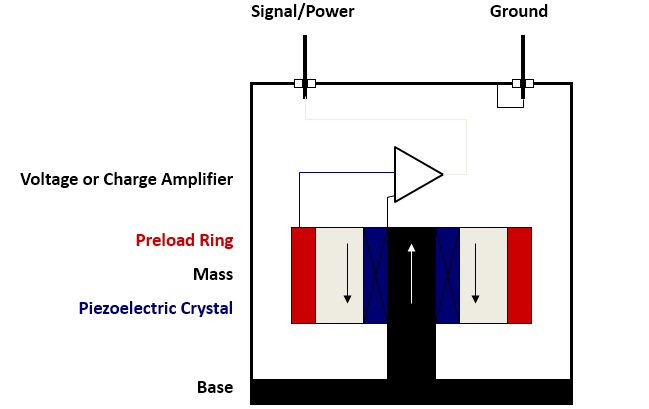

Your browser doesn't support the features required, so you are presented with a simplified version of this presentation.
For the best experience please use the latest Chrome, Safari or Firefox browser.
Project on:
Click Precision*
*Avdhut | Henry | Kunal | Tushar | Guide: Prof. VY Patil
Mission
• Intuitive alternative to mouse and keyboard, or any difficult to learn remote controller
• Why use a glove?

Glove Architecture

Our project components are Accelerometer, ZIGBEE, Flex Sensor and MSP430
Coming up...next
MSP430
Introduction of MSP430
• The MSP430 is a mixed-signal microcontroller family from Texas Instruments.
• Built around a 16-bit CPU, the MSP430 is designed for low cost and, specifically, low power consumption embedded applications
• The electric current drawn in idle mode can be less than 1 microamp.
Specification of MSP430
• Used for low powered embedded devices
• The MSP430 does not have an external memory bus, so is limited to on-chip memory (up to 256 KB Flash memory and 16 KB RAM)
• it has a DMA controller, timer, 10/12/14/16-bit ADCs and many other usual peripherals
MSP430 Part Numbering

DECIPHERING THE SUFFIX
• MSP430F2618ATZQWT-EP
• MSP430: Standard prefix.
• F: Indicates a memory type or specialized application.
• 2 INDICATES The generation of device
• 6: The model within the generation
DECIPHERING THE SUFFIX (Cont.)
• MSP430F2618ATZQWT-EP
• 18- One or two digits indicating the amount of memory
• "A" -An optional suffix indicating an upward-compatible revised version
• T: Indicates a temperature range of −40°C to +105 °C.
• ZQW: Indicates the package the part is kept in. "ZQW" is a TI-specific name for a ball grid array.
• T: Indicates that the parts are shipped in small reel (7-inch) packaging.
• -EP: Indicates an additional feature. "-Q1" specifies that the part is automotive qualified. "-EP" and "-HT" indicate extended temperature products.
Architecture

Address space

Flash/ROM
• The start address varies between 01100h (60k devices) to 0F800h (2k devices) and always runs to the end of the address space at location 0FFFFh.
• Flash can be used for both code and data. Word or byte tables can also be stored and read by the program from Flash/ROM.
• All code, tables, and hard-coded constants reside in this memory space.
RAM & SFRs
• RAM always starts at address 0200h. The end address of RAM depends on the amount of RAM present on the device. RAM is used for both code and data.
• Some peripheral functions are mapped into memory with special dedicated functions. The Special Function Registers (SFRs) are located at memory addresses from 0000h to 000Fh.
– Interrupt enables (locations 0000h and 0001h);
– Interrupt flags (locations 0002h and 0003h);
– Enable flags (locations 0004h and 0005h);
Central Processing Unit
• The RISC type architecture of the CPU is based on a short instruction set (27 instructions), interconnected by a 3-stage instruction pipeline for instruction decoding.
• The CPU has a 16-bit ALU, four dedicated registers and twelve working registers, which makes the MSP430 a high performance microcontroller suitable for low power applications.
• The addition of twelve working general purpose registers saves CPU cycles by allowing the storage of frequently used values and variables instead of using RAM.
INTEGRATED PERIPHERALS
• Timers
• Watchdog (WDT)
• Advanced Encryption Standard (AES)
• Brown-Out Reset (BOR)
• Direct Memory Access (DMA) Controller
• I 2 C (Inter IC)
Coming up...next
Accelerometer
Introduction of Accelerometer
• An accelerometer is a device that measures proper acceleration
• It uses the force of gravity as input vector
• Its most sensitive to tilt when its sensitive axis is perpendicular to the force of gravity
• Accelerometer measures all accelerations, except those accelerations due to gravity
Types of Accelerometer
• Resistive
• Capacitive
• Fiber Optic
• Piezoelectric
Resistive Accelerometer
• Operating Principle
– Voltage output of resistor bridge changes proportionally with applied acceleration

Capacitive Accelerometer
• Operating Principle
– Utilizes frequency modulation technique through varying capacitor bridge

Fiber Optic Accelerometer
• Operating Principle
– Amount of light gathered by receivers is proportional to applied acceleration

Fiber Optic Accelerometer
• Fiber Optic
– Similar characteristics and applications as resistive and capacitive sensors
– Additional features
• Provision for remotely locating electronics
– High temperature operation to 1000 F (537 C)
– Cabling is transmitting only light, which consequently eliminates the possibility of RF and EM interference in “noisy” environments
Piezoelectric Accelerometer
• Operating Principle
– Force on self-generating crystal provides charge output proportional to acceleration

Piezoelectric Effect
– Word origin comes from the greek work “piezen” which translates “to squeeze”.
– The generation of an electrical signal by a dielectric material as it is subjected to a mechanical stress.
Piezoelectric Materials
• Piezoelectric Materials
– Naturally Piezoelectric
• Rochelle Salt
– One of first materials used to make sensors
• Tourmaline
– Sensitive to hydrostatic pressure
• Exotic, “Man-Made” Materials
– Langasite
– Lithium Niobate
• Cultured Quartz
APPLICATIONS
• Engineering – to measure vehicle acceleration
– Vibration on cars, machines, buildings, process control systems and safety installations
• Biologically its used for high frequency recordings of bi-axial or tri-axial acceleration (>10 Hz) which allows the discrimination of behavioral patterns while animals are out of sight.
• In Industries vibration in machines allows the user to monitor machines by comparing it with the previous steady state data and detect these faults before the rotating equipment fails completely
Coming up...next
Zigbee
What exactly is Zigbee?
• ZigBee is a wireless mesh network TECHNOLOGY WHICH PROVIDES low-cost, low-power.
• Based on an IEEE 802.15.4 standard for personal area networks.
• Targeted at applications that require a low data rate, long battery life, and secure networking.
• Has a defined rate of 250 kbit/s.
• The ZigBee specification is intended to be simpler and less expensive than other WPANs, such as Bluetooth.
History of Zigbee
• The name refers to the waggle dance of honey bees WHICH THEY USE to communicate important information to her hive members.
• ZigBee-style networks began to be conceived around 1998.
• The IEEE 802.15.4-2003 standard was completed in May 2003.
• Philips Semiconductors AND ZIGBEE ALLIANCE a major mesh network supporter.
History of Zigbee (cont.)
• The first stack release is now called ZigBee 2004.
• The second stack release is called ZigBee 2006.
• now the current stack release, ZigBee 2007.
• contains two stack profiles, stack profile 1 (simply called ZigBee).
• stack profile 2 (called ZigBee PRO).
Characteristics of Zigbee
• Three license-free bands: 2.4-2.4835 GHz, 868-870 MHz and 902-928 MHz.
• At 2.4 GHZ, there are a total of 16 channels available with a maximum data transfer of 250 kbps.
• At 915 MHz: 10 channels for a max 40 kbps transfer rate.
• At 868 MHz: 1 channel for a max 20 kbps transfer rate.
• Maximum data rates allowed for each of these frequency bands are fixed.